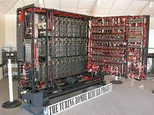

Alan Turing's Accomplishments
The Turing Machine
The bombe is an electro-mechanical device used by the British cryptologists to help decipher German Enigma-machine-encrypted secret messages during World War II.[1] The US Navy[2] and US Army[3] later produced their own machines to the same functional specification, albeit engineered differently both from each other and from Polish and British bombes.
The British bombe was developed from a device known as the "bomba" which had been designed in Poland at the Biuro Szyfrów (Cipher Bureau) by cryptologist Marian Rejewski, who had been breaking German Enigma messages for the previous seven years, using it and earlier machines. The initial design of the British bombe was produced in 1939 at the UK Government Code and Cypher School (GC&CS) at Bletchley Park by Alan Turing, with an important refinement devised in 1940 by Gordon Welchman. The engineering design and construction was the work of Harold Keen of the British Tabulating Machine Company. The first bombe, code-named Victory, was installed in March 1940[6] while the second version, Agnus Dei or Agnes, incorporating Welchman's new design, was working by August 1940.

The bombe was designed to discover some of the daily settings of the Enigma machines on the various German military networks: specifically, the set of rotors in use and their positions in the machine; the rotor core start positions for the message—the message key—and one of the wirings of the plugboard.
Despite being ostracised by the authorities, Turing's fame lives on — he is now regarded by many as the father of computing: Turing machines are still used to test the mathematics of algorithms and information theory, and Turing's ideas have maintained their usefulness to mathematicians and scientists, his passion for scientific endeavour inspiring and aiding those who share his dedication and continue the ideas he began many years ago.